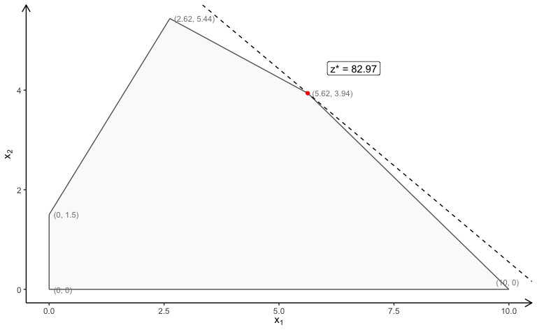

The gMOIP package can be used to make 2D and 3D plots of linear programming (LP), integer linear programming (ILP), or mixed integer linear programming (MILP) models with up to three objectives. This include the polytope, integer points, ranges and iso profit curve. Plots of both the solution and criterion space are possible. For instance the non-dominated (Pareto) set for bi-objective LP/ILP/MILP programming models.
The package also include an inHull function for checking if a set of points is inside/at/outside the convex hull of a set of vertices (for arbitrary dimension).
Finally, the package also contains functions for generating (non-dominated) points in ℝn and classifying non-dominated points as supported extreme, supported non-extreme and unsupported.
Usage
Consider the model max {cx|Ax ≤ b} (could also be minimized) with 2 variables:
A <- matrix(c(-3,2,2,4,9,10), ncol = 2, byrow = TRUE)
b <- c(3,27,90)
coeff <- c(7.75, 10) # coefficients cThe polytope of the LP model with non-negative continuous variables (x ≥ 0):
plotPolytope(
A,
b,
coeff,
type = rep("c", ncol(A)),
crit = "max",
faces = rep("c", ncol(A)),
plotFaces = TRUE,
plotFeasible = TRUE,
plotOptimum = TRUE,
labels = "coord"
)
The polytope of the ILP model with LP faces (x ∈ ℤ0):
plotPolytope(
A,
b,
coeff,
type = rep("i", ncol(A)),
crit = "max",
faces = rep("c", ncol(A)),
plotFaces = TRUE,
plotFeasible = TRUE,
plotOptimum = TRUE,
labels = "coord"
)
The polytope of the MILP model (first variable integer) with LP faces:
plotPolytope(
A,
b,
coeff,
type = c("i", "c"),
crit = "max",
faces = c("c", "c"),
plotFaces = TRUE,
plotFeasible = TRUE,
plotOptimum = TRUE,
labels = "coord"
)
You can do the same with three variables:
A <- matrix( c(
3, 2, 5,
2, 1, 1,
1, 1, 3,
5, 2, 4
), nc = 3, byrow = TRUE)
b <- c(55, 26, 30, 57)
coeff <- c(20, 10, 15)
# LP model
view <- matrix( c(-0.412063330411911, -0.228006735444069, 0.882166087627411, 0, 0.910147845745087,
-0.0574885793030262, 0.410274744033813, 0, -0.042830865830183, 0.97196090221405,
0.231208890676498, 0, 0, 0, 0, 1), nc = 4)
loadView(v = view) # set view angle
plotPolytope(A, b, plotOptimum = TRUE, obj = coeff, labels = "n")
Note: interactive 3d plots cannot be displayed in a GitHub README file, and static images or animated gifs are used here instead. Visit the pkgdown online documentation to view plots which can be manipulated in the browser.
For more examples see example("gMOIP-package") or browseVignettes('gMOIP').
LaTeX support
You may create a TikZ file of the plot for LaTeX using
library(tikzDevice)
tikz(file = "plot_polytope.tex", standAlone=F, width = 7, height = 6)
plotPolytope(
A,
b,
coeff,
type = rep("i", ncol(A)),
crit = "max",
faces = rep("c", ncol(A)),
plotFaces = TRUE,
plotFeasible = TRUE,
plotOptimum = TRUE,
labels = "coord"
)
dev.off()Installation
Install the latest stable release from CRAN:
install.packages("gMOIP")Alternatively, install the latest development version from GitHub (recommended):
install.packages("remotes")
remotes::install_github("relund/gMOIP")
library(gMOIP)
browseVignettes('gMOIP')
example("gMOIP-package")The package is highly dependent on the rgl package for plotting 3D graphics. If your build of rgl does not include OpenGL functions, use rgl::rglwidget() to display results, e.g. via options(rgl.printRglwidget = TRUE).